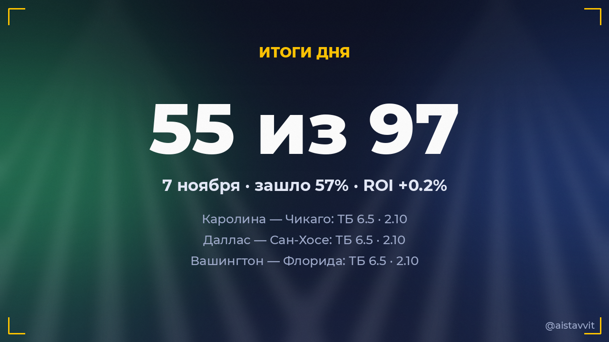

Итоги дня — 7 ноября 2026
Зашло 55 из 97 основных прогнозов (57%), ROI дня +0.2%. Каждый прогноз учтён — и заходы, и промахи.

Все прогнозы дня
🎾 Каспер Рууд — Карлос Алькарас
Будет 2 сета · 1.600:2 ✅
Будет 2 сета · 1.600:2 ✅
⚽ Кардифф Сити — Бернли
ТБ 2.5 · 1.505:4 ✅
ТБ 2.5 · 1.505:4 ✅
⚽ Валенсия — Реал Мадрид
ТМ 3.5 · 1.680:3 ✅
ТМ 3.5 · 1.680:3 ✅
⚽ ФК «Ла-Лувьер» — Серкль Брюгге
ТМ 2.5 · 1.890:1 ✅
ТМ 2.5 · 1.890:1 ✅
⚽ Рома — Сассуоло
Ф1 (−1.5) · 1.733:0 ✅
Ф1 (−1.5) · 1.733:0 ✅
⚽ Talleres (Córdoba) — Эстудиантес
ТМ 2.5 · 1.611:1 ✅
ТМ 2.5 · 1.611:1 ✅
⚽ Gimnasia (Mendoza) — Индепендьенте Ривадавия
ТМ 2.5 · 1.551:1 ✅
ТМ 2.5 · 1.551:1 ✅
⚽ Осер — Париж
П2 · 1.750:1 ✅
П2 · 1.750:1 ✅
⚽ АДО Ден Хааг — Спарта Роттердам
ТБ 2.5 · 1.543:1 ✅
ТБ 2.5 · 1.543:1 ✅
⚽ Штутгарт — Вердер
П1 · 1.641:0 ✅
П1 · 1.641:0 ✅
⚽ Ауд-Хеверле Лёвен — Мехелен
ТМ 2.5 · 1.992:0 ✅
ТМ 2.5 · 1.992:0 ✅
⚽ Парма — Болонья
П2 · 1.831:2 ✅
П2 · 1.831:2 ✅
🎾 Бьянка Андрееску — Лейре Ромеро Гормас
Будет 2 сета · 1.850:2 ✅
Будет 2 сета · 1.850:2 ✅
⚽ Галатасарай — Амедспор
П1 и ТБ 1.5 · 1.584:3 ✅
П1 и ТБ 1.5 · 1.584:3 ✅
🏀 Сакраменто Кингз — Сан-Антонио Сперс
ТБ 231.5 · 1.91109:124 ✅
ТБ 231.5 · 1.91109:124 ✅
⚽ Эспаньол — Депортиво Ла-Корунья
ТМ 2.5 · 1.770:0 ✅
ТМ 2.5 · 1.770:0 ✅
⚽ Бирмингем Сити — Суонси Сити
П1 · 1.832:1 ✅
П1 · 1.832:1 ✅
⚽ Питерборо — Рединг
ТБ 2.5 · 1.570:5 ✅
ТБ 2.5 · 1.570:5 ✅
🏒 Вашингтон — Флорида
ТБ 6.5 · 2.104:3 ✅
ТБ 6.5 · 2.104:3 ✅
⚽ Остин — Портленд Тимберс
П2 · 1.670:2 ✅
П2 · 1.670:2 ✅
🏀 Оклахома-Сити Тандер — Вашингтон Уизардс
ТМ 223.5 · 1.94114:75 ✅
ТМ 223.5 · 1.94114:75 ✅
🏒 Лос-Анджелес — Питтсбург
ТБ 6.5 · 1.982:5 ✅
ТБ 6.5 · 1.982:5 ✅
🏀 Голден Стэйт — Орландо Мэджик
ТБ 220.5 · 1.94126:119 ✅
ТБ 220.5 · 1.94126:119 ✅
🏀 Финикс Санз — Хьюстон Рокетс
ТМ 223.5 · 1.95102:99 ✅
ТМ 223.5 · 1.95102:99 ✅
🏒 Миннесота — Тампа-Бэй
ТБ 6.5 · 1.873:4 ✅
ТБ 6.5 · 1.873:4 ✅
🏒 Даллас — Сан-Хосе
ТБ 6.5 · 2.104:3 ✅
ТБ 6.5 · 2.104:3 ✅
🏒 Каролина — Чикаго
ТБ 6.5 · 2.109:2 ✅
ТБ 6.5 · 2.109:2 ✅
🏀 Атланта Хокс — Бруклин Нетс
ТБ 227.5 · 1.95124:121 ✅
ТБ 227.5 · 1.95124:121 ✅
⚽ Реал Солт-Лейк — Лос-Анджелес Гэлакси
П1 · 1.692:1 ✅
П1 · 1.692:1 ✅
⚽ Тигрес УАНЛ — Крус Асуль
Обе забьют — да · 1.552:3 ✅
Обе забьют — да · 1.552:3 ✅
🏒 Айлендерс — Нью-Джерси
П2 (с ОТ и буллитами) · 1.684:5 ✅
П2 (с ОТ и буллитами) · 1.684:5 ✅
⚽ Толука — Монтеррей
П1 · 1.574:0 ✅
П1 · 1.574:0 ✅
⚽ Даллас — Колорадо Рэпидз
ТБ 2.5 · 1.593:1 ✅
ТБ 2.5 · 1.593:1 ✅
⚽ Сиэтл Саундерс — Лос-Анджелес
П1 · 2.052:1 ✅
П1 · 2.052:1 ✅
⚽ Миннесота Юнайтед — Сан-Хосе Эртквейкс
П1 · 1.713:1 ✅
П1 · 1.713:1 ✅
⚽ Ньюпорт Каунти — Уолсолл
ТБ 2.5 · 1.693:1 ✅
ТБ 2.5 · 1.693:1 ✅
⚽ Насьонал — Академику де Визеу
ТМ 2.5 · 1.761:0 ✅
ТМ 2.5 · 1.761:0 ✅
🎾 Софья Лансере — Нома Ноа Акугуэ
Будет 2 сета · 1.852:0 ✅
Будет 2 сета · 1.852:0 ✅
⚽ Вест Бромвич Альбион — Миллуолл
П1 · 2.003:0 ✅
П1 · 2.003:0 ✅
⚽ Хаддерсфилд Таун — Эксетер Сити
ТБ 2.5 · 1.611:2 ✅
ТБ 2.5 · 1.611:2 ✅
⚽ Милтон Кинс Донс — Суиндон Таун
ТМ 3.5 · 1.612:1 ✅
ТМ 3.5 · 1.612:1 ✅
⚽ Оксфорд Юнайтед — Стивенидж
ТМ 2.5 · 1.770:1 ✅
ТМ 2.5 · 1.770:1 ✅
⚽ Самсунспор — Коньяспор
ТМ 2.5 · 1.811:0 ✅
ТМ 2.5 · 1.811:0 ✅
⚽ РБ Лейпциг — Аугсбург
П1 и ТБ 1.5 · 1.555:2 ✅
П1 и ТБ 1.5 · 1.555:2 ✅
⚽ Йорк Сити — Нортгемптон Таун
П1 · 1.834:0 ✅
П1 · 1.834:0 ✅
⚽ Лидс Юнайтед — Тоттенхэм
ТМ 2.5 · 1.831:0 ✅
ТМ 2.5 · 1.831:0 ✅
⚽ Рексем — Вулверхэмптон
ТМ 2.5 · 1.861:1 ✅
ТМ 2.5 · 1.861:1 ✅
⚽ Куинз Парк Рейнджерс — Линкольн Сити
П1 · 1.622:1 ✅
П1 · 1.622:1 ✅
🎾 Джанис Тьен — Робин Монтгомери
Будет 2 сета · 1.842:0 ✅
Будет 2 сета · 1.842:0 ✅
⚽ Эюпспор — Коджаэлиспор
П2 · 1.930:2 ✅
П2 · 1.930:2 ✅
⚽ Барнет — Транмир Роверс
П1 · 1.773:0 ✅
П1 · 1.773:0 ✅
🎾 Александра Шубладзе — Клер Лю
Будет 2 сета · 1.750:2 ✅
Будет 2 сета · 1.750:2 ✅
⚽ Вестерло — Шарлеруа
ТБ 2.5 · 1.561:5 ✅
ТБ 2.5 · 1.561:5 ✅
🏀 Лейкерс — Портленд
П1 (с ОТ) · 1.65124:118 ✅
П1 (с ОТ) · 1.65124:118 ✅
⚽ Малага — Расинг Сантандер
ТБ 2.5 · 1.631:2 ✅
ТБ 2.5 · 1.631:2 ✅
🎾 Люка Ван Аш — Бен Шелтон
Будет 2 сета · 1.691:2 ❌
Будет 2 сета · 1.691:2 ❌
⚽ Сан-Диего — Спортинг Канзас-Сити
П1 и ТБ 1.5 · 1.570:1 ❌
П1 и ТБ 1.5 · 1.570:1 ❌
⚽ Кальяри — Фрозиноне
ТБ 2.5 · 1.531:0 ❌
ТБ 2.5 · 1.531:0 ❌
⚽ Торино — Лечче
П1 · 1.801:1 ❌
П1 · 1.801:1 ❌
🎾 Магда Линетт — Анастасия Захарова
Будет 2 сета · 1.862:1 ❌
Будет 2 сета · 1.862:1 ❌
⚽ Хьюстон Динамо — Сент-Луис Сити
Обе забьют — да · 1.550:1 ❌
Обе забьют — да · 1.550:1 ❌
⚽ Аккрингтон Стэнли — Уиком Уондерерс
ТБ 2.5 · 1.690:2 ❌
ТБ 2.5 · 1.690:2 ❌
🏒 Торонто — Монреаль
ТБ 6.5 · 1.872:4 ❌
ТБ 6.5 · 1.872:4 ❌
🏒 Оттава — Юта
ТБ 6.5 · 1.854:2 ❌
ТБ 6.5 · 1.854:2 ❌
⚽ Instituto (Córdoba) — Ньюэллс Олд Бойз
П1 · 1.872:2 ❌
П1 · 1.872:2 ❌
⚽ Портсмут — Сток Сити
ТМ 2.5 · 1.661:2 ❌
ТМ 2.5 · 1.661:2 ❌
🏀 Кливленд — Нью-Йорк Никс
ТБ 223.5 · 1.9597:109 ❌
ТБ 223.5 · 1.9597:109 ❌
⚽ Бристоль Сити — Норвич Сити
ТМ 2.5 · 2.010:5 ❌
ТМ 2.5 · 2.010:5 ❌
🎾 Мария Саккари — Александра Эала
Будет 2 сета · 1.851:2 ❌
Будет 2 сета · 1.851:2 ❌
🏒 Колорадо — Детройт
ТБ 6.5 · 1.984:0 ❌
ТБ 6.5 · 1.984:0 ❌
🏒 Нэшвилл — Сент-Луис
П2 (с ОТ и буллитами) · 1.913:1 ❌
П2 (с ОТ и буллитами) · 1.913:1 ❌
⚽ Эксельсиор — Гоу Эхед Иглз
1X · 1.560:1 ❌
1X · 1.560:1 ❌
⚽ ПСЖ — Труа
Ф1 (−2.5) · 1.821:0 ❌
Ф1 (−2.5) · 1.821:0 ❌
⚽ Арсенал — Халл Сити
ТБ 2.5 · 1.501:0 ❌
ТБ 2.5 · 1.501:0 ❌
⚽ Престон Норт Энд — Саутгемптон
П2 · 1.631:0 ❌
П2 · 1.631:0 ❌
⚽ Бромли — Ротерхэм Юнайтед
П1 · 2.000:2 ❌
П1 · 2.000:2 ❌
⚽ Фулхэм — Ньюкасл
П1 · 2.051:1 ❌
П1 · 2.051:1 ❌
⚽ Сент-Джонстон — Данди
ТМ 2.5 · 2.062:1 ❌
ТМ 2.5 · 2.062:1 ❌
⚽ Фортуна Ситтард — Telstar
П1 · 2.042:2 ❌
П1 · 2.042:2 ❌
⚽ Флитвуд Таун — Рочдейл
П1 · 1.691:2 ❌
П1 · 1.691:2 ❌
🎾 Анна Блинкова — Гина Феистел
Будет 2 сета · 1.792:1 ❌
Будет 2 сета · 1.792:1 ❌
⚽ Данди Юнайтед — Мотеруэлл
П1 · 2.021:1 ❌
П1 · 2.021:1 ❌
⚽ Гёзтепе — Истанбул Башакшехир
П1 · 2.011:2 ❌
П1 · 2.011:2 ❌
⚽ Блэкберн Роверс — Вест Хэм
П2 · 1.642:1 ❌
П2 · 1.642:1 ❌
⚽ Ноттингем Форест — Манчестер Сити
П2 · 1.693:1 ❌
П2 · 1.693:1 ❌
⚽ Падерборн 07 — Eintracht Frankfurt
ТМ 3.5 · 1.622:2 ❌
ТМ 3.5 · 1.622:2 ❌
⚽ Осасуна — Атлетик
П2 · 2.051:1 ❌
П2 · 2.051:1 ❌
⚽ Абердин — Хайберниан
ТМ 2.5 · 2.010:4 ❌
ТМ 2.5 · 2.010:4 ❌
⚽ Alverca — Каза Пия
П1 · 1.741:1 ❌
П1 · 1.741:1 ❌
⚽ Кру Александра — Уимблдон
ТМ 2.5 · 1.832:1 ❌
ТМ 2.5 · 1.832:1 ❌
⚽ Уотфорд — Мидлсбро
П2 · 1.540:0 ❌
П2 · 1.540:0 ❌
⚽ Антверпен — Ломмел
П1 · 1.852:2 ❌
П1 · 1.852:2 ❌
⚽ Майнц 05 — Бавария
Ф2 (−1.5) · 1.751:2 ❌
Ф2 (−1.5) · 1.751:2 ❌
⚽ Боруссия Д — Эльферсберг
Ф1 (−1.5) · 1.762:1 ❌
Ф1 (−1.5) · 1.762:1 ❌
⚽ Чарльтон Атлетик — Шеффилд Юнайтед
П2 · 2.042:1 ❌
П2 · 2.042:1 ❌
⚽ Сент-Миррен — Рейнджерс
ТБ 2.5 · 1.530:2 ❌
ТБ 2.5 · 1.530:2 ❌
⚽ Атланте — Сантос
ТБ 2.5 · 1.570:2 ❌
ТБ 2.5 · 1.570:2 ❌
← предыдущий день · следующий день → · статистика бота · прогнозы на сегодня · Telegram-канал